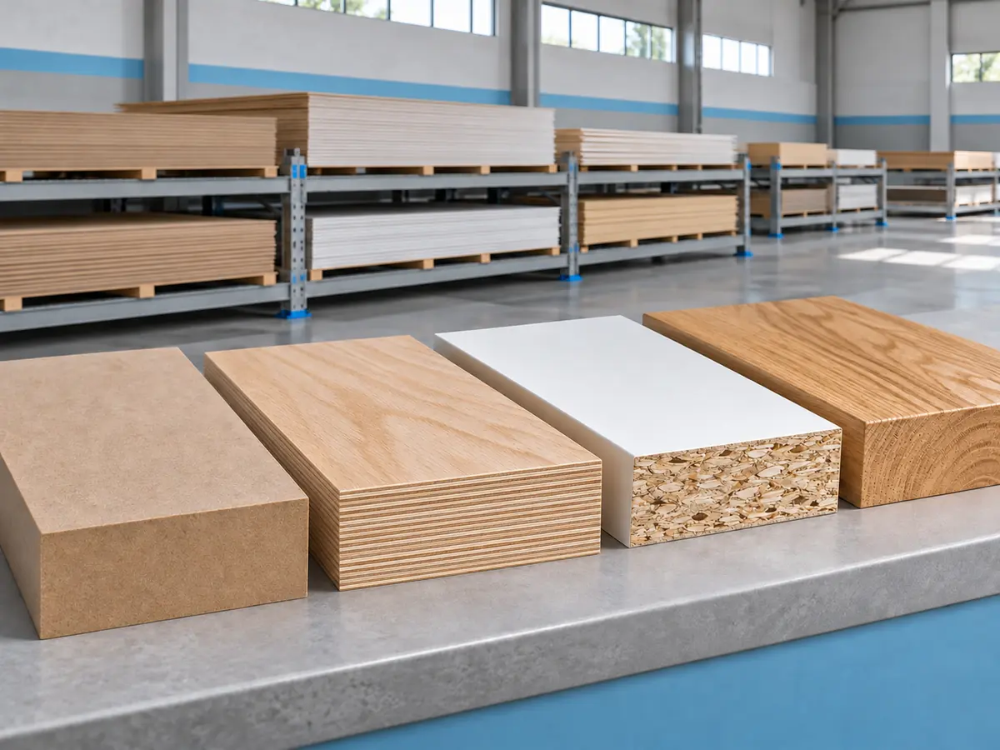
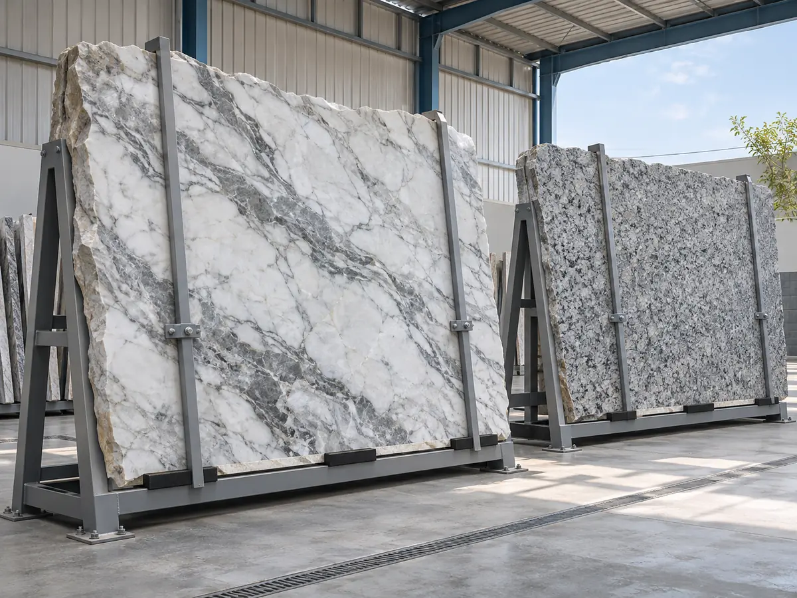
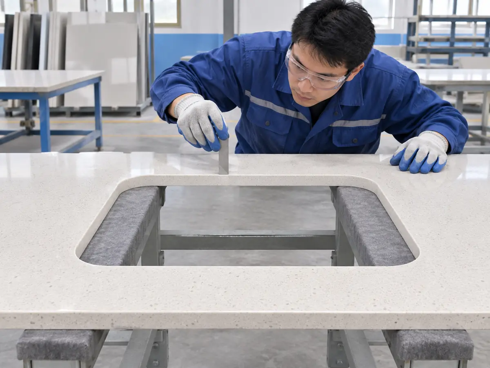
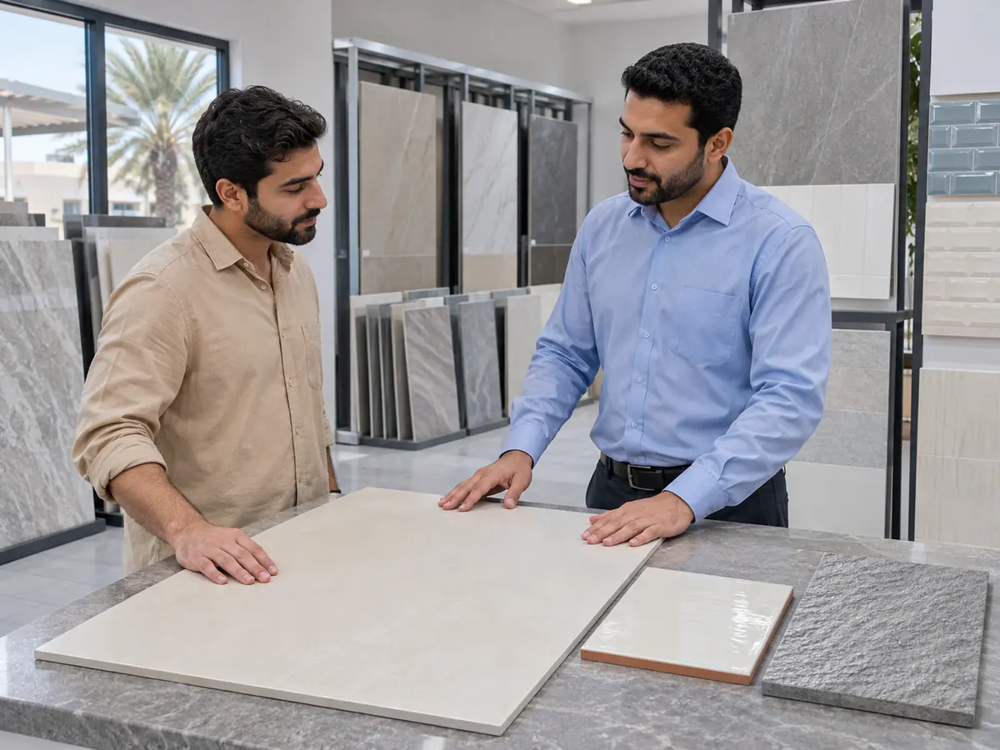
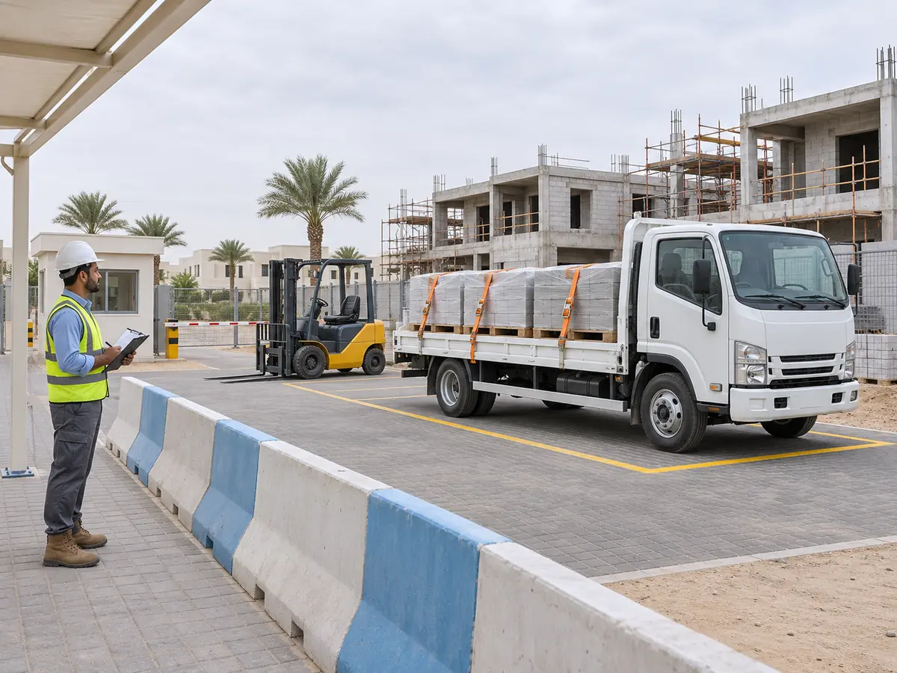
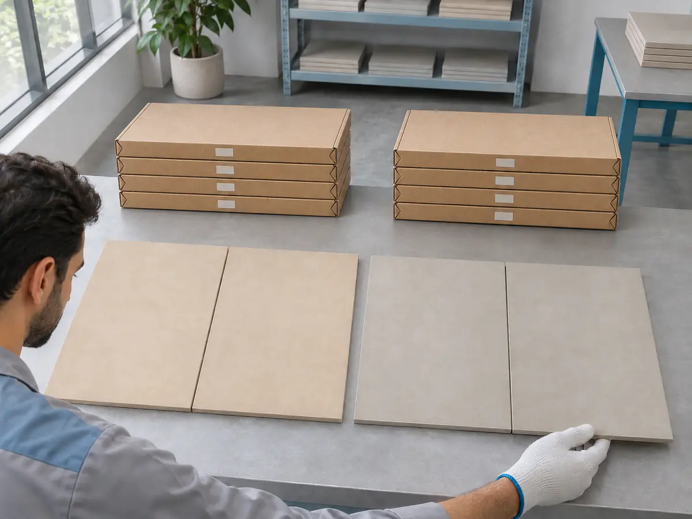
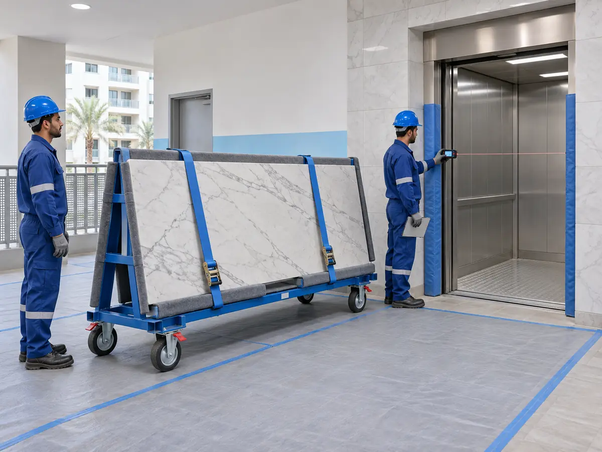

مواد البناء والتوريد في دبي: دليلك لاختيار المواصفات والمورد من الطلب إلى الاستلام
قد تجد في دبي عشرات المنتجات المتشابهة في اللون أو الشكل، لكن الفرق الحقيقي يظهر في المواصفة الفنية، وملاءمة المادة للاستخدام، وثبات التوريد، وطريقة التسليم، والضمان. شراء بورسلان لمجلس ليس كشراء بلاط لممر خارجي معرض للماء. وتوريد حديد التسليح أو الخرسانة لا يُعامل كشراء إكسسوارات ديكور؛ فالمخططات المعتمدة والاختبارات والجهة المخولة بالموافقة تحدد الاختيار الآمن.
هذا دليل عملي لأصحاب الفلل والشقق والمحلات، ولمديري المشتريات في المشاريع، وللموردين والمتاجر الراغبين في عرض أصنافهم على بيت الريف. يشرح 5 تخصصات للشركات والمنشآت تحتوي 49 خدمة في مسودة شجرة بيت الريف، ويطوّر 17 محورًا من سؤال البحث إلى قرار الشراء ووثائق التسليم. لا نعرض قائمة بأفضل الموردين أو أسعار سوق غير موثقة، ولا نعدّ ظهور اسم خدمة إثباتًا لتوفرها لدى متجر بعينه.
طريقة الاستخدام: حدد البند ووحدته والمواصفة المعتمدة؛ اطلب عرضين أو ثلاثة على أساس واحد؛ راجع التوفر والنقل والتفريغ وشروط الاستبدال؛ اختبر المطابقة عند الاستلام قبل استخدام المادة. وإذا كانت المادة تدخل في أعمال إنشائية أو خدمات فنية أو أنظمة مقاومة حريق أو عزل حساسة، لا تعتمد بديلًا دون موافقة صاحب الاختصاص.
انتقل مباشرة: التخصصات والخدمات · المحاور الـ17 · مقارنة العروض · طلب عرض السعر · المراجع.
تنبيه مهني: هذا الدليل يساعد على التحضير والمقارنة، وليس مواصفة إنشائية أو اعتمادًا لمنتج أو بديل. تختلف الشهادات والاختبارات واشتراطات الموقع والجهة التنظيمية بحسب فئة المادة والمشروع. لا تستخدم وصفًا تسويقيًا مثل «مطابق للمواصفات» بديلاً عن وثيقة مطابقة صحيحة تخص الصنف نفسه عندما تكون مطلوبة.
ما الذي يميز توريد مواد البناء إلى دبي؟
المسافة بين متجر المواد والمشروع ليست المسألة الوحيدة. في أبراج دبي قد يفرض المبنى أوقات دخول للشاحنات أو تعليمات لحماية المصعد الخدمي أو حدودًا لحمولة الأرضية ومسارًا لنقل الأحجار والألواح. وفي موقع فيلا قيد الإنشاء قد تكون نقطة التفريغ مكشوفة للشمس، أو المساحة ضيقة أمام شاحنة كبيرة، أو قد تحتاج الخرسانة إلى توقيت تسليم متصل بموعد صب معتمد. وفي متجر داخل مركز تجاري قد يلزم تنسيق خاص بالدخول والتغليف وخروج المخلفات. اتفق على الوصول والتسليم قبل إصدار أمر الشراء.
في طلبك الأول اذكر الإمارة والمنطقة ونوع المشروع، واسم الجهة المخولة باستلام الشحنة، وأبعاد أو وزن الأصناف الكبيرة، ونوع سيارة التوصيل الممكن، ووقت الدخول المسموح به، وما إذا كان السعر يشمل الرفع إلى الطابق أو التنزيل عند الرصيف فقط. لا تشارك بيانات أمنية أو رموز دخول في صفحة عامة؛ تُسلَّم تعليمات الوصول المحدودة للطرف المعني بعد التعاقد.
قبل الاتصال بالمورد: سبعة أسئلة تمنع الالتباس
| السؤال | لماذا يهم؟ | ماذا تسجل في طلبك؟ |
|---|---|---|
| ما اسم الصنف ورمزه؟ | تشابه الأسماء لا يعني تطابق الخامة أو الدرجة | وصف بند وماركة/موديل أو بديل مشروط |
| أين سيستخدم؟ | الأداء يختلف بين داخلي وخارجي ورطب وحار | غرفة/واجهة/سطح/خزان/منطقة حمل |
| ما وحدة القياس؟ | المتر المربع غير المتر الطولي، والطن غير الكيس | وحدة وكمية صافية وهدر محسوب |
| هل هناك اعتماد قائم؟ | يمنع تغيير مواد مرتبطة بمخطط أو مواصفة | رقم الرسم أو المرجع والموافِق المختص |
| متى تحتاج الشحنة؟ | يؤثر التوفر والتخزين على برنامج التنفيذ | تاريخ مطلوب وجدول دفعات |
| أين تُفرّغ؟ | النقل لا يشمل دائمًا الرفع والمناولة | العنوان العام، البوابة، الطابق، القيود |
| كيف تُقبل أو تُرد؟ | يحدد التصرف في الكسر والعيوب والزيادة | فحص عند الاستلام وسياسة مرتجعات مكتوبة |
التخصصات الخمسة: 49 خدمة في شجرة الشركات
الشجرة المرفقة تُنظّم خدمات الشركات والمتاجر والموردين في خمسة تخصصات، مع بقاء ثلاثة تخصصات مستقلة للمهنيين والحرفيين. أسماء الخدمات أدناه من المسودة كما هي، بما فيها البنود المتقاطعة مع التجهيز والتركيب، ولا تعني أن جميعها تندرج في الرخصة الاقتصادية نفسها. يجب مطابقة نشاط المنشأة وترخيصها وبيانات المنتجات قبل عرض خاصية الطلب أو النشر.
1. مواد البناء والتشطيب — من اختيار المادة إلى استلامها
هذا هو المسار الأوسع للمشروع: من المواد الأولية كالأسمنت والرمل والحصى والطابوق والحديد والخرسانة الجاهزة، إلى الجبس والدهانات والعزل والأرضيات والأدوات الصحية ومستلزمات الكهرباء والسباكة. لكن قائمة المواد ليست بديلًا عن جدول الكميات والمواصفات. اسم «حديد» وحده لا يحدد الدرجة والقطر وطريقة الفحص، واسم «أسمنت» لا يحدد النوع الملائم أو ظروف التخزين. في المواد الحساسة اطلب مستندات الصنف واعتماد المختص قبل الطلب.
عند الشراء: افصل مواد الهيكل عن التشطيب وعن المعدات والخدمات اللوجستية، ولا تضع «مواد متنوعة» في سطر واحد يصعب مراجعته. في الخرسانة الجاهزة راجع مع فريق المشروع الجهة المنتجة وبيانات الخلطة والتسليم والاختبارات المطلوبة، وفي الحديد راجع المستندات التعريفية والاعتمادات ووحدات الوزن. في المنتجات المعبأة اطلب نوع العبوة وتاريخها وسلامة التخزين وفق متطلبات المصنع.
عند الاستلام: طابق الاسم والكمية والدفعة والوثائق مع أمر الشراء، وسجّل التلف أو النقص قبل التوقيع على استلام كامل دون تحفظ. التوصيل إلى المشروع خدمة منفصلة قد تشمل النقل ولا تشمل الرفع أو وضع المواد في المخزن؛ ثبّت حدودها كتابة. قيد تنظيمي مهم: ورد في المسودة أن هذا التخصص يشمل تصنيفًا حاليًا غير قابل للاختيار؛ لا يؤدي ظهور هذه الفقرة إلى تفعيله أو إظهار مقدمي خدمات غير منشورين.
الخدمات الواردة حرفيًا في مسودة شجرة الشركات (21): توريد الأسمنت، توريد الرمل، توريد الحصى، توريد الطابوق والبلوك، توريد الحديد، توريد الخرسانة الجاهزة، توريد مواد البناء للمشاريع، توريد الجبس، توريد مواد الدهانات، توريد مواد العزل، توريد الأرضيات، توريد الأدوات الصحية، توريد مستلزمات الكهرباء، توريد مستلزمات السباكة، بيع مواد البناء، بيع الأدوات الصحية، بيع الأدوات الكهربائية، بيع مواد السباكة، بيع الدهانات، بيع مواد العزل، توصيل المواد إلى المشروع.
ملاحظة تطبيقية: فروق مهمة: توريد المواد الإنشائية لا يجيز تغيير المواصفة المعتمدة؛ بيع الأدوات الصحية والإنارة لا يعني تركيبها؛ توصيل المواد ليس تصريحًا بإدارة عمليات الرفع في الموقع.
2. الأخشاب والألواح — من اختيار المادة إلى استلامها

الأخشاب والألواح تدخل في خزائن المطابخ وغرف الملابس وأبواب وكسوات وأثاث مفصل. يختلف MDF عن الخشب الطبيعي والأبلكاش والميلامين وHPL في البنية والاستخدام والتشطيب؛ لا تختَر اللوح باللون وحده. اسأل عن السماكة ونوع القلب والسطح ومقاومة الرطوبة الملائمة للموضع، وطريقة حماية الحواف وملاءمة الإكسسوارات، ثم اعتمد عينة فعلية ورمز اللون والمنتج.
عند التسعير: اذكر أبعاد كل لوح، وأبعاد القطع المطلوبة، واتجاه العروق أو الزخرفة إن كان مؤثرًا، وحجم الهدر المتوقع ومن يتحمله. حدد ما إذا كان السعر للوح الخام أم للقص أم للتلبيس والتجهيز والتغليف. إذا طلبت قص وتجهيز الألواح، اطلب قائمة قطع دقيقة مع ترميز الأجزاء ونسبة التفاوت المقبولة وفق اتفاق المشروع، ولا تعتمد عرضًا بالعدد فقط دون أبعاد.
عند التسليم: افحص حواف الألواح واستقامتها والتواءها وسلامة الأسطح ورقم اللون وكودها، وتأكد من وصول القصّات كاملة ومعلّمة للتركيب. لا تضع الألواح مباشرة في مكان رطب أو مكشوف دون تعليمات تخزين مناسبة. يمكن ربط المورد لاحقًا بورشة النجارة، لكن التوريد والتصنيع والتركيب ثلاثة نطاقات تعاقدية مختلفة.
الخدمات الواردة حرفيًا في مسودة شجرة الشركات (7): توريد خشب MDF، توريد الخشب الطبيعي، توريد الأبلكاش، توريد ألواح الميلامين، توريد ألواح HPL، توريد إكسسوارات النجارة، قص وتجهيز الألواح.
ملاحظة تطبيقية: في طلب مطبخ حسب المقاس: حدّد اللوح والسماكة والتشطيب والحواف وإكسسوارات المفصلات والأدراج ومسؤولية القياس النهائي، خصوصًا إذا كانت الجدران غير منتظمة.
3. الرخام والجرانيت — من اختيار المادة إلى استلامها

الرخام الطبيعي والجرانيت يختلفان في التكوين والمظهر والاستجابة للبقع والخدش والصيانة. وحتى بين ألواح الصنف نفسه تتفاوت العروق والدرجات اللونية؛ لذلك راجع الألواح الفعلية قبل قص مساحة كبيرة. أرسل مخطط توزيع الأرضيات والجدران والواجهات أو المقاسات النهائية للألواح والدرج والحواف، وبيّن ما إذا كانت القطعة داخلية أو خارجية أو معرضة للمياه.
اتفاق القص والتركيب: يجب أن يحدد من يرفع المقاسات، ومن يعتمد اتجاه العروق وتسلسل الألواح، ونوع تشطيب الحافة، والفتحات المطلوبة، والفواصل وأسلوب التثبيت. لا يُستخدم السعر للمتر المربع وحده لمقارنة درج مع سطح مسطح؛ فعدد القصات والحواف والرفع والمناولة يؤثر على تكلفة العمل. عند طلب جلي وتلميع الرخام أو الصيانة، احرص على تحديد هل العمل معالجة عيب أم صيانة دورية، ولا تفترض أن كل حجر يقبل المادة الكيميائية نفسها.
الاستلام: راجع سماكة المنتج واللون وتناسق الألواح والكسور والزوايا والحواف قبل السماح بالتركيب. دَوّن أي قطعة مستبدلة وتأكد من توافق اللون مع الدفعة الأصلية بقدر الإمكان. انتبه إلى أن خدمات التركيب والصيانة مذكورة في الشجرة إلى جانب التوريد، لكنها لا تثبت تلقائيًا أن المورد نفسه مرخص أو متعاقد لتنفيذها.
الخدمات الواردة حرفيًا في مسودة شجرة الشركات (7): توريد الرخام الطبيعي، توريد الجرانيت، قص الرخام حسب المقاس، جلي وتلميع الرخام، تركيب الأرضيات الرخامية، تركيب رخام الجدران والواجهات، صيانة ومعالجة الرخام.
ملاحظة تطبيقية: تحقق من توافق المواد اللاصقة أو العزل أو الدعامات مع نوع الحجر والتطبيق، بالتنسيق مع المصمم أو المقاول المختص.
4. أسطح المطابخ والمغاسل — من اختيار المادة إلى استلامها

شراء سطح مطبخ أو مغسلة يتضمن أكثر من اختيار لون رخامي: نوع المادة، والسماكة، والدعائم، والحواف، وموضع الحوض والموقد، ومسافات الحركة، والتعامل مع الحرارة والرطوبة والتنظيف. الرخام الطبيعي والجرانيت والكوارتز وبعض أسطح البورسلان ليست أسماء مترادفة؛ لكل نظام خصائص وتعليمات تصنيع وتركيب يجب الرجوع إلى بياناته الفنية لا إلى وصف «مقاوم لكل شيء».
مرحلة القياس: قبل تصنيع أسطح المطابخ أو المغاسل، راجع جاهزية وحدات الخزائن واستوائها، ومواقع الحوض والموقد والحنفيات والأجهزة، والأبعاد النهائية على الطبيعة. اتفق على أماكن الوصلات والحواف والفتحات، وعلى من يملك مسؤولية خطأ القياس أو تغيير موضع الأجهزة بعد الاعتماد. في الأسطح الكبيرة أو المرتفعة، اسأل عن مناولة الألواح وسلامة الرفع داخل المبنى.
مرحلة التسليم: اطلب مخطط تصنيع بسيطًا ورقم المادة والعينة المعتمدة، وفحص الأبعاد والفتحات والحواف والدعامات، وتعليمات الاستخدام والصيانة والضمان. عندما يشمل العرض تصنيع مغاسل الرخام أو تركيب الكوارتز أو البورسلان السطحي أو إعادة التلميع، افصل كل بند في التعاقد حتى لا يضيع الفرق بين توريد خام وتصنيع وتركيب.
الخدمات الواردة حرفيًا في مسودة شجرة الشركات (7): تصنيع أسطح المطابخ، تركيب أسطح المطابخ، تصنيع مغاسل الرخام، تفصيل فتحات الأحواض والأجهزة، تركيب الكوارتز، تركيب البورسلان السطحي، صيانة وإعادة تلميع الأسطح.
ملاحظة تطبيقية: مثال: سطح بطول أربعة أمتار قد يحتاج أكثر من قطعة بحسب مقاس اللوح ومسار الوصول والفتحات؛ لا تفترض أن عرضه كقطعة واحدة ممكن دون فحص.
5. السيراميك والبورسلان — من اختيار المادة إلى استلامها

تبدأ المقارنة من نوع البلاط ومكان استخدامه: جدار داخلي أم أرضية عالية الحركة أم منطقة رطبة أم ممشى خارجي. اختيار اللون والمقاس لا يكفي؛ راجع المقاومة الملائمة للانزلاق وظروف المكان، وملاءمة السطح، وتعليمات استخدام اللاصق والجراوت، وإمكانية الحصول على الدفعة اللونية نفسها. سعر المتر لا يشرح تكلفة المشروع إذا غابت تكلفة القص والوزرات وتدرج النقوش ونقل البضائع.
قبل الشراء: استخدم مخطط التبليط لتحديد المساحة الصافية، والحواف والوزرات، واتجاه التركيب، ونسبة الهدر حسب نمط القص الفعلي، لا نسبة ثابتة لكل المشاريع. اطلب عينة فعلية ورقم اللون والدفعة؛ تحقّق من مواصفات المنتج وشهاداته عندما تلزم، خصوصًا في التطبيقات الخاضعة لمتطلبات فنية. اسأل ما إذا كان السعر يشمل المواد المساعدة، وحماية البلاط أثناء التخزين والنقل.
عند التسليم والتركيب: افحص كسر الزوايا وتجانس الدفعة والعدد بالمتر أو الكرتون والمعلومات المكتوبة على العبوة. ثبت حدود مسؤولية القص والتجهيز والتركيب وتوريد الوزرات. وجود خدمات تركيب السيراميك والبورسلان في هذه الشجرة لا يلغي الفصل بين متجر يبيع ومقاول ينفّذ من حيث العرض والصلاحيات والضمان.
الخدمات الواردة حرفيًا في مسودة شجرة الشركات (7): توريد السيراميك، توريد البورسلان، توريد البلاط الخارجي، قص وتجهيز البلاط، تركيب السيراميك، تركيب البورسلان، توريد وتركيب الوزرات.
ملاحظة تطبيقية: عند شراء بلاط الحمام أو الشرفة: راجع الميول والمصارف والعزل أولًا؛ المنتج المقاوم للماء لا يحل محل تصميم نظام عزل صحيح.
من المورد إلى العميل: خمسة مستندات تجعل الطلب قابلًا للتحقق
لا تحتاج كل عملية شراء إلى ملف هندسي ضخم، لكن كلما ارتفعت قيمة المادة أو تأثيرها في السلامة أو كثرت شحناتها أصبح التوثيق أهم. هذه الوثائق الخمس تجعل المقارنة واضحة وتقلل الخلاف وقت الاستلام:
- طلب سعر RFQ: اسم الصنف ومواصفته والكمية والوحدة والموقع والتاريخ المطلوب.
- عرض المورد: سعر الوحدة والإجمالي والتوفر ومدة الصلاحية والنقل والتفريغ والضريبة عند الانطباق والمرتجعات.
- اعتماد المادة عند الحاجة: العينة وورقة البيانات الفنية وشهادة المطابقة الملائمة وقرار صاحب الاختصاص.
- أمر شراء PO: رقم مرجع العرض، والكميات والدفعات ومكان التسليم، واسم من يصرح بالتغييرات.
- إثبات التسليم: سند شحنة وفحص كمية وحالة، والملاحظات والدفعة أو الرقم التشغيلي عندما يكون مهمًا، ثم مطابقة الفاتورة.
قائمة مستندات المنتج: ما الفرق بينها؟
| المستند | ما الذي يثبته؟ | ما الذي لا يثبته وحده؟ |
|---|---|---|
| ورقة البيانات الفنية TDS | خصائص المنتج والاستخدام المعلن وتعليماته | أنه مقبول تلقائيًا لكل مشروع |
| ورقة بيانات السلامة SDS | معلومات التعامل والمخاطر والتخزين لمواد تنطبق عليها | ملاءمة النظام الفني للموقع |
| شهادة مطابقة/علامة مطابقة | نطاق مطابقة محدد وفق الجهة والمخطط المطبق | أن كل منتجات المورد أو كل الدفعات متطابقة |
| عينة مادة معتمدة | الشكل والدرجة أو اللون الذي وافق عليه المشروع | الامتثال الفني إن لم يُفحص بالمستندات المطلوبة |
| أمر شراء وسند تسليم | الصنف والكمية والتاريخ والجهة المستلمة | كفاءة المادة أو خلو العمل من عيب مخفي |
| تقرير اختبار عند انطباقه | نتيجة فحص محدد لعينة أو دفعة أو نظام | قبولًا عامًا خارج حدود الفحص |
من واقع المراجع الرسمية: يشرح مختبر دبي المركزي خدمات شهادات المطابقة لفئات من مواد البناء، مثل الأسمنت ومواد منخفضة الانبعاثات وحديد التسليح والبلوك والسيراميك ضمن مخططات محددة. كما توجد خدمة موافقة فنية للمنتجات غير القياسية في نطاقها. لا تعمم ضرورة شهادة واحدة على كل المواد؛ راجع المرجع المعمول به لفئة المنتج وموقع المشروع. مصادر بلدية دبي.
دليل القرار: 17 محورًا لشراء مواد البناء في دبي
كل محور أدناه يوسّع سؤالًا من «المزيد» إلى خطوات تحقق قابلة للتطبيق. لا نختلق أسعار 2026، ولا نرتب متاجر على أنها «الأفضل» دون بيانات موثوقة، ولا نَعِد بتوفر مخزون لحظي قبل سؤال المورد. اختر البند أولًا ثم اطلب بياناته الفعلية من المنشأة المنشورة في الدليل.
المحور 1 — أفضل محلات مواد البناء في إمارة دبي: كيف تختار المورد؟
«الأفضل» يختلف بحسب طبيعة الشراء. قد تحتاج متجرًا يوفر عبوتين من الدهان خلال اليوم، أو مورد حديد وتسليح بعقود وشحنات، أو جهة متخصصة في رخام يُقص حسب المقاس. لا تقارن متجر تجزئة بمورد مشاريع على أساس عدد المنتجات في المعرض فقط؛ الاختيار الصحيح هو الأقرب إلى مواصفة طلبك وطريقة تنفيذه. ابدأ بفئة الصنف وحجم الشحنة وإمكانية التوريد إلى عنوانك، ثم تحقق من النشاط التجاري والقدرة على إصدار فاتورة ووثائق الصنف المطلوبة.
اطلب ثلاثة إثباتات عملية: تأكيد الصنف المتاح برمزه أو صورة ملصقه، وتأكيد موعد التسليم بما يشمله من نقل ومناولة، وسياسة التعامل مع التلف والنقص والمرتجعات. إذا كانت مواد المشروع معتمدة مسبقًا، افحص أن المورد سيحافظ على العلامة أو النموذج أو الدرجة المعتمدة، وأن أي تغيير سيرجع إلى المختص المخول. أما تقييمات المتاجر والصور المنشورة فتساعدك على استكشاف الخيارات، لكنها لا تثبت مواصفة الشحنة الفعلية ولا توفرها اليوم.
خطوة تالية: أرسل جدول المواد نفسه إلى الموردين الملائمين بدل سؤال عام مثل «بكم مواد البناء؟». قارن الرد المكتوب الكامل، لا سرعة الرد وحدها.
المحور 2 — أرخص مواد بناء في دبي: كيف تقارن الأسعار والمواصفات؟
قد يكون لوح بسعر أقل مختلفًا في السماكة، أو بلاط بسعر أقل من درجة لونية أخرى، أو عرض حديد لا يشمل النقل والتفريغ. السعر العادل يبدأ من توحيد وحدة القياس والمنتج ومرحلة التسليم. اطلب سعر الوحدة قبل الضريبة، ومبلغ الضريبة عند انطباقها، وتكاليف الشحن، والمناولة، والتغليف الخاص، والقص والتركيب إذا طُلبا. ثم احسب الإجمالي الذي سيصل به الصنف إلى موضع الاستلام المتفق عليه، وليس سعر الرف وحده.
اسأل عن حد الطلب الأدنى، ورسوم إعادة التوصيل إذا لم تتوفر بوابة دخول، وشروط رد المواد المفتوحة أو المقطوعة، وفرق سعر الدفعات اللاحقة. في المنتجات التي تتغير أسعارها، اسأل عن مدة صلاحية عرض السعر ولا تعتمد سعرًا مصورًا أو رسالة غير مؤرخة. خفّض التكلفة بإزالة الهدر والتوريد المتكرر غير الضروري، لا باستبدال مادة تؤثر على السلامة أو مطابقة المشروع.
مثال مقارنة: لا تقارن «50 درهمًا لكل متر» مع «45 درهمًا لكل متر» قبل معرفة هل المقصود متر مربع أو طولي، وهل التوريد وحده أم شامل القص والوزرات والرفع. هذه أمثلة توضيحية على اختلاف صيغة السعر وليست أسعار سوق 2026.
المحور 3 — أين تجد محلات وموردي مواد البناء في إمارة دبي؟
ابدأ بتحديد نوع المادة قبل البحث الجغرافي: مواد إنشائية، عزل، كهرباء وسباكة، أخشاب وألواح، رخام وجرانيت، أسطح المطابخ، أو سيراميك وبورسلان. يمكن أن يكون المورد خارج منطقتك ويملك خدمة توصيل مناسبة، أو قريبًا لكنه لا يحتفظ بالمقاس والدفعة المطلوبين. لذلك لا تجعل المسافة المعيار الوحيد؛ انظر إلى الصنف والمواصفة والتوفر والسيارة المطلوبة ومواعيد الدخول للموقع.
عند البحث في دليل بيت الريف، استخدم الإمارة والمنطقة والتخصص للوصول إلى الشركات والمتاجر المنشورة فعليًا، ثم تحقق مباشرة مع كل منشأة من قائمة منتجاتها المخزنة اليوم. المناطق مثل ديرة وبر دبي والقصيص والقوز وجبل علي ودبي مارينا ووسط دبي ليست فئات ترخيص أو ضمانًا للتغطية؛ هي أمثلة لمواقع مختلفة في متطلبات التوصيل والوصول. إذا كان الطلب لموقع في برج أو مجمع منظم، أبلغ المورد بقيود البوابة والمصعد والخدمات قبل تثبيت الموعد.
خطوة تالية: لا تعرض بطاقة مورد في منطقة لم يصرّح بخدمتها، ولا تفترض أن متجرًا يقدم القص والتركيب لمجرد أنه يبيع المادة الأساسية.
المحور 4 — أسعار الحديد والأسمنت والخرسانة والطابوق في دبي 2026
لا يوجد سعر واحد ثابت يصلح للنشر لكل الحديد والأسمنت والخرسانة والطابوق في دبي خلال 2026. تتأثر العروض بدرجة المادة وأبعادها وكمية الطلب ومصدر التوريد ووقت الشراء وموقع التفريغ وتكلفة النقل. وحتى الصنف ذو الاسم المألوف قد يختلف في البيانات الفنية أو شهادة المنشأ أو طريقة تعبئته أو شروط تخزينه. لذلك لا تنشر سعرًا تقديريًا على أنه «سعر اليوم» دون تاريخ ومصدر ومنتج محدد.
في الحديد: حدد النوع والأبعاد أو الأقطار وأوزان الحصر والوثائق التي يحتاجها الاستشاري. في الأسمنت: حدد النوع والعبوة أو التوريد السائب وظروف التخزين المناسبة. في الخرسانة الجاهزة: لا تفصل العرض عن مواصفة الخلطة وبرنامج الصب والفحوص ومسؤوليات الموقع؛ الخرسانة لا تُستبدل بمادة أخرى بسبب خصم غير معتمد. في البلوك والطابوق: راجع الأبعاد والكميات والتلف المتوقع ومتطلبات الأداء الخاصة بالمخطط. قد تتطلب فئات من المنتجات أو المصانع أنظمة اعتماد وشهادات مطابقة معينة؛ تحقق منها وفق الصنف والجهة المختصة.
طلب سعر سليم: أرسل قائمة أصناف مستخرجة من مخطط أو جدول كميات مع وحدة وكمية وموعد وموقع، واطلب عرضًا مكتوبًا بتاريخ انتهاء الصلاحية.
المحور 5 — كيف تختار مواد بناء الفلل والملاحق؟
تبدأ المواد من المخططات المعتمدة والمواصفات، ثم تنقسم إلى عناصر إنشائية، وأنظمة عزل وخدمات، وتشطيبات ظاهرة. أخطر خطأ هو جمعها جميعًا في «قائمة مواد فيلا» بلا مرجع فني. فقد يكون تغيير مادة تشطيب ظاهر ممكنًا بعد مراجعة العينة والتكلفة، بينما يحتاج تغيير نظام عزل أو مادة إنشائية إلى تقييم وتصديق مختص بحسب أثره. لا تستخدم النصيحة العامة بديلاً عن قرار المهندس المسؤول.
لصاحب الفيلا، اطلب من المقاول أو الاستشاري فصل قائمة المواد التي يشتريها المالك عن المواد التي يوردها المقاول؛ وتحديد من يتحمل أخطاء الحصر والتخزين وكسر البضائع وتأخر الشحنات. أما في الملحق الجديد أو التوسعة، فتحقق من توافق المواد الجديدة مع المنشأ القائم والمخططات والتصاريح الخاصة بالموقع. جهّز جدولًا يبيّن البند، والموديل المعتمد، والبدائل المقبولة — إن كانت مقبولة — وقرار من سيوافق عليها.
فكرة مهمة: يمكن أن يشتري العميل مواد الديكور بنفسه لتوسيع الخيارات، لكن إدارة المواد الحساسة دون تنسيق مع المقاول قد تربك الجدول والضمان؛ القرار تعاقدي وفني وليس قاعدة ثابتة للجميع.
المحور 6 — محلات السيراميك والبورسلان والرخام والجرانيت
تختلف الأرضيات والكسوات في امتصاص الماء وطريقة التصنيع والتشطيب والتحمل وطبيعة الصيانة. لا يكفي أن ترى صورتين بلون بيج متشابه. عند زيارة المعرض، المس العينة وانظر إلى حافتها وظهرها واسأل عن رمزها ودرجتها وقياسها الحقيقي وطريقة العناية بها. للممرات الخارجية والأماكن الرطبة، راجع متطلبات مقاومة الانزلاق الملائمة للاستخدام. للرخام الطبيعي، راجع تنوع العروق وإمكانية اعتماد الألواح الفعلية قبل القص.
تختلف طريقة الحصر: البلاط يُحصر غالبًا بالمساحة مع القص والهدر المناسبين، بينما رخام الدرج أو المغاسل يحتاج تفاصيل حواف وفتحات ومقاسات منفصلة. لا تفترض نسبة هدر موحدة في الممر الضيق أو التصميم القطري أو البلاطات الكبيرة؛ اطلب مخطط تبليط أو قائمة قص من المنفذ. وثّق إذا كانت الوزرات واللاصق والجراوت والنقل والتنزيل والتركيب ضمن العرض أم منفصلة.
عند الاستلام: تحقق من تطابق رموز اللون والدفعة قدر الإمكان، وافحص الكسور والقطع الناقصة قبل توقيع تسليم كامل. لا تؤخر اكتشاف الاختلاف إلى ما بعد تركيب معظم المساحة.
المحور 7 — مواد العزل المائي والحراري: الأنواع والاستخدامات
العزل نظام عمل وليس اسم عبوة فقط. قد يتكون من تحضير سطح وطبقة أساس ومواد عزل وتفاصيل زوايا واختراقات وحماية وفحوص؛ ويختلف من سطح مكشوف إلى حمام أو خزان أو أساس أو جدار خارجي. اطلب من المورد شرح حدود استخدام المنتج وتوافقه مع المواد أسفله وفوقه ودرجة التعرض للماء أو الشمس. وفي الخزانات أو التطبيقات الحساسة، راجع ملاءمة المنتج للاستخدام المحدد والاشتراطات الفنية والصحية ذات الصلة.
الاختيار الفني: دع المختص يحدد النظام المعتمد والمواصفة، ثم اطلب من المورد ورقة بيانات المنتج والدفعة والتخزين ومدة الصلاحية وأي مستندات مطابقة لازمة. لا تستبدل نظامًا من شركة بأجزاء من أنظمة مختلفة دون تحقق من التوافق. في العزل الحراري، لا تختزل القرار في سماكة اللوح وحدها؛ هناك أداء حراري وطريقة تركيب وحماية وتفاصيل حركة واشتراطات بناء حسب المشروع.
عند التنفيذ: الاختبار المناسب للطبقة قبل تغطيتها يحدده المختص وفق النظام والموقع. لا تعتبر ضمان المنتج ضمانًا تلقائيًا لجودة تنفيذ المقاول، ولا العكس.
المحور 8 — محلات الأدوات الصحية والسباكة ومستلزمات الحمامات
قبل شراء خلاط أو حوض أو مرحاض أو مضخة أو مواسير، راجع الأبعاد الفعلية والتوصيلات والموقع. قد يختلف بروز الخلاط أو المسافة بين التغذية والصرف أو نوع التثبيت، ما يجعل المنتج جميل الشكل غير ملائم للمكان. أرسل مخطط الحمام أو صورًا آمنة للتركيب القائم مع القياسات، ثم طابق الموديل واللون والملحقات مع قائمة المشروع.
اسأل عن توفر قطع الغيار والمكونات الاستهلاكية وضمان المنتج وشروط التركيب، وهل توصيل الأدوات يشمل قطعًا إضافية أو وصلات أو محولات. في المواسير والصمامات، لا يعتمد اختيار المقاس أو نوع المادة على توقع المتجر وحده؛ يجب الرجوع إلى المختص والمخطط ومتطلبات التشغيل. وفي وحدات الحمامات قارن مقاومة الرطوبة وسهولة التنظيف والوصول للصيانة بالإضافة إلى المظهر.
قائمة التسليم: عدد القطع، والموديل، ورمز اللون، والملحقات، وحالة الكرتون، ووثائق الضمان والصيانة. ضع مسؤولية عدم تطابق القياسات على نحو واضح إذا استلم المورد المقاسات من المالك دون زيارة.
المحور 9 — محلات الكهرباء والإنارة والأسلاك والقواطع
الإنارة الديكورية قد تبدو اختيارًا تجميليًا، لكن الأسلاك والقواطع والمقابس ومكونات اللوحات تدخل في السلامة الكهربائية ولا يصح اختيارها حسب أرخص عرض أو توافر شكل مشابه. يحدد الكهربائي أو المهندس المؤهل متطلبات الدائرة والحمل وطريقة الحماية والمكونات الملائمة، وتُراجع الوثائق الفنية والمطابقة المطلوبة بحسب الصنف والموقع. لا توضح في الدليل خطوات توصيل أو تغيير قاطع للمستخدم غير المختص.
في الإنارة اسأل عن درجة اللون وطريقة التوزيع، ومواصفات وحدات الإضاءة والسائق أو المحول، وملاءمة الرطوبة والحرارة وموضع التركيب وفق المنتج. في المساحات التجارية قد تؤثر متطلبات التشغيل والصيانة وارتفاع السقف في الاختيار. عند طلب كمية كبيرة، احتفظ بمرجع موديل واحد أو ببديل موافق عليه مسبقًا حتى لا تختلف الألوان أو خصائص وحدات الإضاءة بين دفعتين.
مراجعة العرض: تأكد هل السعر يشمل الوحدة وحدها أم الملحقات أو الحوامل أو التركيب، ومن سيقدم وثائق المنتج المطلوبة للمقاول أو الاستشاري.
المحور 10 — محلات الدهانات والمعجون والجبس ومواد التشطيب
عند شراء الدهان، أخبر المورد بالسطح وحالته: جدار داخلي جاف، أو واجهة خارجية، أو خشب، أو أرضية أو منطقة تعرضت لرطوبة. فقد يتطلب نظام الطلاء معالجة وتحضيرًا وبطانة وطبقات محددة، ولا تحل عبوة طلاء فاخر محل معالجة تسرب. قارن خواص المنتج المناسبة للمكان وتعليمات التجفيف والتطبيق، واطلب عينة لون في الإضاءة الفعلية قبل اعتماد كمية كبيرة.
في الجبس والمعجون والمواد اللاصقة، لا تجمع منتجات من أنظمة مختلفة لمجرد توفرها في المتجر؛ تحقق من التوافق وملاءمة الرطوبة وطرق التطبيق من بيانات المصنع والمختص. عند شراء ألواح أو أكياس أو معجون، تأكد من سلامة التخزين والتغليف وتاريخ الصلاحية إذا كان ينطبق، واحتفظ برمز الصنف لمشتريات الاستكمال.
الفصل التعاقدي: سعر المادة وحده لا يعادل سعر «دهان غرفة» أو «تشطيب سقف»؛ العمل يشمل التحضير والعمالة والحماية والاستهلاك والتنظيف. اسأل المورد صراحة عما يقدمه، ولا تَعِد الزائر بخدمة تركيب غير منشورة.
المحور 11 — المواد المعتمدة وشهادات المطابقة والمواصفات الفنية
من أكثر الأخطاء شيوعًا قول «معتمد من البلدية» دون بيان رقم المنتج والشهادة والجهة المصدرة ونطاقها وصلاحيتها. تنشر بلدية دبي عبر مختبر دبي المركزي مخططات شهادات مطابقة لمنتجات مختلفة، ومنها فئات في مواد البناء والدهانات واللاصق والحديد والبلوك والسيراميك، كما توجد موافقة فنية لبعض المنتجات غير المشمولة بمواصفات قياسية معتمدة. ليست شهادة واحدة مطلوبة لكل منتج، ولا تُغني شهادة مصنع عن إثبات ملاءمة الدفعة أو الاستخدام عندما يقتضيه المشروع.
اطلب من المورد الوثائق الصحيحة وراجع ما إذا كانت تخص الموديل أو الدرجة أو المصنع أو الدفعة نفسها. قارن رقم الشهادة والمنتج ببيانات العبوة أو ورقة البيانات الفنية، واسأل الاستشاري أو الجهة المختصة عن المتطلبات الحالية للعقار. في المنتجات أو الأنظمة الجديدة أو غير القياسية، لا تدّعِ وجود اعتماد مسبق لمجرد نجاح اختبار داخلي أو وجود كتالوج تسويقي.
قاعدة قرار: «مطابق للمواصفة X» دعوى تحتاج إثباتًا ومطابقة للنطاق، و«صالح للاستخدام في مشروعك» قرار إضافي يعتمد على التصميم وظروف التطبيق. راجع شهادات المنتجات والموافقة الفنية من بلدية دبي.
المحور 12 — كيف تحسب الكميات وتقرأ جدول الكميات BOQ؟
جدول الكميات BOQ ليس قائمة أسماء فقط؛ لكل بند وصف ووحدة وكمية وافتراضات. ابدأ بمطابقة رقم البند مع الرسم أو المواصفة، ثم افصل المساحة أو الطول أو الحجم أو الوزن بحسب طريقة القياس. في أرضية غرفة، مثلًا، لا تدخل الجدران ضمن مساحة الأرضية، لكن تحتاج إلى حساب الوزرات والفتحات والقصات. وفي الدهانات قد تختلف مساحات الأسطح بسبب ارتفاع الجدران أو وجود فتحات وأعمدة، وتتأثر الكمية بمعدل التغطية الفعلي ونظام الطبقات.
لتفادي الهدر، اجعل هناك ثلاثة أعمدة: الكمية الصافية من الرسومات، وكمية قص أو احتياط يحددها المنفذ بحسب العمل، وكمية الطلب النهائية. إذا كانت العبوة تُباع بالكرتون أو اللوح أو الكيس، وضّح طريقة تحويل الوحدات واحتمال التقريب إلى عبوات كاملة. لا تنقل نسبة هدر من فيديو عام إلى مشروعك؛ البلاط كبير المقاس وحواف الدرج والكسوة ذات العروق تتطلب حصرًا خاصًا.
مثال تعليمي غير تسعيري: عندما يحتاج المشروع 53 مترًا مربعًا من بلاط محدد، لا يكفي شراء 53 مترًا مسطحًا بالضبط إذا كانت هناك قصات وهدر. يحدد المنفذ الكمية الإضافية وفق توزيع البلاط وعبواته، ويُعتمد الإجمالي قبل الشراء. أي كمية إنشائية أو خلطات تتطلب مراجعة مختص وفق المخططات.
المحور 13 — شراء مواد البناء بالجملة أم بالتجزئة؟
الجملة تناسب صنفًا معلوم المواصفة وحجمًا مؤكدًا وجدول استخدام واضحًا، وقد تتيح سعر وحدة أو برنامج توريد أفضل. لكنها قد ترفع تكلفة التخزين أو تعرض المواد للتلف أو تغيّر الدفعات إذا بقيت في الموقع أشهرًا. التجزئة تعطي مرونة عند التشطيب التدريجي أو اختبار العينات، لكنها قد تزيد النقل أو تجعل الحصول على الدفعة اللونية نفسها صعبًا لاحقًا. القرار يعتمد على التكلفة الكلية والمخاطر لا الخصم وحده.
في مواقع دبي ذات مساحات التخزين المحدودة، قد يكون التسليم على دفعات أفضل من شحنة كبيرة تمنع حركة العمال أو الوصول إلى الخدمات. حدّد من يتحمل التخزين إذا تأخر المشروع، وكيف يضمن المورد تطابق المواصفة بين الدفعات، وهل يحجز الكمية المتفق عليها، وماذا يحدث لو توقف الصنف أو تغيّر الموديل. المواد الحساسة للرطوبة أو الشمس أو انتهاء الصلاحية تحتاج شروط تخزين مناسبة وفق تعليمات المصنع.
نصيحة للمالك: لا تدفع مقدمًا مقابل مخزون «محجوز» دون مستند يحدد الصنف والكميات ومكانه وموعد تسليمه وشروط الاسترداد، ولا تفترض إمكانية إعادة المنتج المقطوع أو المصنع حسب الطلب.
المحور 14 — مقارنة عروض موردي مواد البناء وشروط التوصيل والضمان
أفضل طريقة للمقارنة هي إرسال نفس RFQ إلى كل مورد وطلب الرد على جميع البنود. اسأل عن السعر الأساسي، والماركة أو الموديل، ووحدة البيع، والكمية المتوفرة، وتاريخ صلاحية العرض، والتسليم، والتفريغ، والضريبة عند الانطباق، ومدة الضمان ونطاقه والاستثناءات. ضع خانة مستقلة للبديل المقترح؛ لا تخلط البديل بالسعر الأصلي حتى لا تصبح المقارنة غير عادلة.
في الإمارات تبلغ ضريبة القيمة المضافة 5% كقاعدة عامة للمعاملات الخاضعة للنسبة القياسية، مع وجود حالات ومعدلات مختلفة بحسب التشريع؛ لذلك اطلب توضيح ما إذا كان السعر شاملًا للضريبة وأيها ينطبق على المعاملة ولا تُضف الضريبة حسابيًا مرتين. المصدر: الهيئة الاتحادية للضرائب.
أثناء التعاقد: وثّق من يعتمد تغيير الموديل عند انقطاع المخزون، ومن ينقل شحنة تالفة، ومن يملك خيار الإرجاع، ومن يتحمل تكلفة رفع أو تنزيل إضافي لم تكن ضمن عرض السعر. الضمان التجاري للمنتج ليس ضمانًا عامًا على أي تركيب من طرف ثالث؛ افصل مسؤولية كل طرف.
المحور 15 — توريد مواد البناء إلى دبي ومناطقها

قبل شحن أحجار أو ألواح طويلة أو حديد أو رافعة أو ألواح خشب إلى موقع في دبي، تحقق من وصول المركبة ونقطة التفريغ. تختلف تفاصيل تسليم شقة في برج عن موقع فيلا أو مصنع أو محل داخل مركز تجاري؛ قد تكون هناك بوابة تحميل، أو مدة حجز، أو مصعد خدمة، أو متطلبات نقل وحماية للأرضيات، أو مسار مؤقت للشاحنة. لا تتعامل مع اسم المنطقة وحده بوصفه موافقة على الدخول.
أرسل للمورد عنوان المشروع العام مع علامة إرشادية ووصف المسار المسموح به، وعدد الطوابق وأبعاد المصعد أو الأبواب عندما تكون مهمة، واسم المستلم المخوّل ونافذة التسليم، وما إذا كان هناك مصدر لعمالة التفريغ. لا تضع كلمات مرور أو أرقام دخول خاصة في الطلب العلني. إن احتاج المشروع تخزينًا مؤقتًا، حدّد المساحة المتاحة وأعمال الحماية ومن المسؤول عن المخاطر بعد الاستلام.
قبل خروج الشاحنة: تأكد من الكمية والوزن والأبعاد والعبوات وعدد الرحلات وتاريخ الحجز. وإذا كان المطلوب تسليمًا على دفعات، اربطها بمراحل التنفيذ والمشتريات، مع مسؤول واضح لتأكيد كل دفعة.
المحور 16 — كيف تتجنب المواد غير المطابقة والهدر وتأخير التوريد؟
تبدأ الوقاية من شراء مادة خاطئة قبل الدفع. استخدم رمز بند واحدًا في الطلب والعرض وأمر الشراء وسند التسليم، وأرفق العينة أو الورقة الفنية المعتمدة عند الحاجة. لا تترك قرار استبدال المنتج لمندوب التوصيل أو عامل التخزين إذا كان الصنف مرتبطًا بمخطط أو مواصفة. اسأل عن التوفر الحقيقي للكمية، وليس توافر عينة واحدة في المعرض؛ وضع موعدًا لتأكيدها قبل بدء العمل.
عند الاستلام، افصل بين استلام الكمية والقبول الفني إذا كان المشروع يتطلب فحصًا. افحص حالة التغليف والقطع المكسورة واللون والدفعات والمقاسات، وسجل التحفظات فورًا، وأبقِ المواد الحساسة في تخزين ملائم. راجع شروط الإرجاع قبل القص أو الفتح أو التركيب. في توريدات المشاريع، احتفظ بسجل دفعات يوضح ما طُلب وما وصل وما رُفض وما استُخدم والرصيد المتبقي.
خطة وقاية قصيرة: طلب واضح، اعتماد موثق، حجز مؤكد، وصول منسق، فحص استلام، وسجل معالجة المخالفات. هذه الخطوات قد تمنع كلفة إعادة شراء ونقل وتأخير أكبر من فرق سعر الوحدة بين الموردين.
المحور 17 — كيف تجهز طلب عرض سعر مواد بناء وتوريد؟
اجعل طلب السعر مستندًا يمكن لأي مورد مناسب قراءته دون سلسلة طويلة من الرسائل. اذكر نوع المشروع والمنطقة وخطوة التنفيذ، ثم أرفق جدول أصناف برقم البند والوصف والمواصفة أو النموذج والكمية ووحدة القياس، وحدد إن كانت البدائل مسموحة مع موافقة منفصلة أم ممنوعة. أضف تاريخ العرض المطلوب وتاريخ التسليم وآلية الدفع المرغوبة وشروط التفريغ والنقل والرفع والمرتجعات. لا تطلب شهادة عامة لكل منتج؛ حدّد ما تحتاج إليه وفق قائمة اعتماد المختص.
إذا لم يكن لديك حصر نهائي، اكتب بوضوح أن الكميات أولية قابلة للمراجعة، واسأل المورد عن حد الطلب وأساس تسعير الزيادة والنقص. إذا كان الصنف يحتاج قياسًا بالموقع مثل أسطح المطابخ أو قص الألواح والرخام، افصل زيارة القياس ورسومات التصنيع عن توريد المادة. للمقارنة العادلة، امنع استبدال المواصفة داخل السعر الأصلي؛ يقدّم البديل في بند مستقل مع بيان الفرق والأسباب.
بعد استلام العروض: استخدم جدول المقارنة أدناه، ثم أصدر أمر شراء برقم مرجع للعرض المعتمد، وتأكد من توثيق الاستلام والملاحظات. لا تستنتج توفرًا أو سعرًا محدثًا لمجرد ظهور بطاقة المورد في الدليل.
جدول مقارنة ثلاثة عروض توريد
استخدم الجدول لمقارنة عروض لنفس الصنف والكمية والموقع. املأ الخانات من المستندات التي يقدمها المورد، ولا تفترض أن ترك خانة فارغة تعني أن الخدمة مشمولة. عندما يختلف المنتج أو النطاق، اكتب «غير قابل للمقارنة حتى توضيح الفرق» بدل اختيار الأرخص تلقائيًا.
| معيار المقارنة | المورد الأول | المورد الثاني | المورد الثالث |
|---|---|---|---|
| الاسم التجاري ورقم الموديل | — | — | — |
| المواصفة والدرجة واللون والدفعة | — | — | — |
| وحدة البيع والكمية الصافية | — | — | — |
| سعر الوحدة وإجمالي البند | — | — | — |
| الضريبة: مشمولة أم مضافة عند انطباقها | — | — | — |
| المخزون المؤكد وتاريخ التوفر | — | — | — |
| النقل إلى الموقع | — | — | — |
| التفريغ والرفع إلى الطابق | — | — | — |
| التغليف والقص والتجهيز إن طُلب | — | — | — |
| شهادة الصنف أو الوثائق المطلوبة | — | — | — |
| موعد التسليم وجدول الدفعات | — | — | — |
| مدة صلاحية عرض السعر | — | — | — |
| سياسة التلف والنقص والاستبدال | — | — | — |
| ضمان المنتج واستثناءاته | — | — | — |
| التوريد والتركيب: منفصل أم مشمول | — | — | — |
| المبلغ الإجمالي القابل للمقارنة | — | — | — |
تفسير النتيجة: العرض الكامل الذي يثبت توفر الصنف ويحترم المواصفة قد يكون أنسب من عرض منخفض السعر لم يوضح النقل أو البديل أو استلام الشحنة. احتفظ بنسخة مؤرخة من كل عرض قبل إصدار أمر الشراء.
نموذج طلب عرض سعر مواد بناء وتوريد
يمكن للعميل نسخ النموذج وإرساله إلى المتاجر والموردين، أو استخدام حقوله في طلب السعر داخل بيت الريف. ليس مطلوبًا جمع بيانات شخصية حساسة أو مستندات ملكية في نموذج عام؛ يكفي النطاق والموقع التقريبي حتى تحدد الشركة مدى قدرتها على الخدمة.
عنوان الطلب: توريد مواد بناء/تشطيب لمشروع في دبي
نوع المشروع: فيلا / شقة / محل / مكتب / مبنى / مشروع آخر
المنطقة ونوع الموقع: [اسم منطقة دبي] — [فيلا مستقلة / برج مُدار / مركز تجاري / موقع قيد الإنشاء]
موعد التوريد المستهدف: [تاريخ أو مدة]
جهة اعتماد المواد: [المالك / المقاول / الاستشاري بحسب العقد]
قواعد الوصول: [نقطة التفريغ، قيود الشاحنة، الطابق، المصعد، وقت الدخول]
الأصناف: رقم بند | اسم المادة | الماركة/الموديل/المواصفة | الوحدة | الكمية | تاريخ الطلب
العينات والشهادات: [المطلوب وفق المشروع]
البدائل: [غير مسموحة / مسموحة فقط بعرض منفصل وموافقة مكتوبة]
نطاق العرض المطلوب: [المواد وحدها / قص وتجهيز / نقل / تفريغ / رفع / تركيب إذا كانت الجهة مخولة]
يرجى توضيح: الأسعار، والضريبة عند انطباقها، والتوفر، ومدة صلاحية العرض، والضمان، والمرتجعات، وملاحظات الشحنة.
مرفقات آمنة عند الحاجة: جدول كميات، صفحة مواصفات ذات صلة، صور عينة غير سرية.
نموذج بند تفصيلي جاهز للمورد
| الحقل | مثال توضيحي غير ملزم |
|---|---|
| رقم البند | FIN-04 |
| الصنف | بورسلان أرضيات داخلي |
| المواصفة | حسب العينة والورقة الفنية المعتمدة للمشروع |
| اللون والمقاس | يتم تثبيتهما بعد اعتماد العينة |
| الوحدة | متر مربع / كرتون بحسب عرض المورد |
| الكمية | تُكتب من جدول الكميات بعد الحصر |
| المكان | شقة في برج — دبي |
| السعر المطلوب | توريد، مع فصل النقل والرفع والوزرات |
| موافقة البديل | استشاري/مصمم مخول قبل الاستبدال |
ثلاث حالات واقعية في منطق الشراء — أمثلة توضيحية
الحالة الأولى: شراء بلاط وفيه اختلاف دفعة لونية

طلب مالك شقة بلاطًا برمز محدد، ووصلت دفعة أولى ثم تأخرت الكمية المتبقية. بعد بدء التركيب ظهرت صناديق تحمل رمز درجة لون مختلفًا. في هذه الحالة لا يكفي القول إن كل الكراتين تحمل اسم العلامة نفسها؛ يجب مقارنة رقم الموديل والدرجة والدفعة بما اعتمد، وإيقاف تركيب الأجزاء المختلفة إلى أن تُراجع مع المورد والمختص. يُوثق عدد الكراتين المتأثرة وسند التسليم وشروط الاستبدال قبل استهلاك المادة.
العبرة: احرص على تأكيد توافر الكمية المطلوبة من الدرجة نفسها قبل بدء العمل، واحتفظ بملصق عينة معتمدة؛ فهذا أسهل من محاولة إخفاء الاختلاف بتغيير طريقة الإضاءة.
الحالة الثانية: رخام جميل لا يدخل المصعد

اختار عميل لوحًا كبيرًا لسطح مطبخ، ثم اتضح عند التسليم أن أبعاده لا تسمح بمروره من المصعد الخدمي أو المدخل المتاح. هنا تتسع تكلفة الشحنة بسبب إعادة النقل والرفع أو الحاجة إلى تعديل خطة القص. الحل الوقائي هو طلب مقاسات فتحة المصعد وطريق النقل والتفريغ قبل تصنيع القطعة، والتنسيق مع إدارة المبنى والورشة حول إمكانية تقسيم السطح بطريقة مقبولة للتصميم.
العبرة: يسبق تخطيط الوصول للوح إلى الموقع قرار قصه؛ والمسؤولية عن الرفع والتجهيز يجب أن تكون مكتوبة لا ضمن افتراض «التوصيل مجاني».
الحالة الثالثة: بديل عزل يُقترح لتوفير التكلفة
ذكر عرض أول مادة عزل معينة، ثم اقترح المورد منتجًا بديلًا متاحًا أسرع وأقل سعرًا. لا يُرفض كل بديل تلقائيًا ولا يُقبل تلقائيًا. المطلوب مقارنة ورقة البيانات الفنية ومكونات النظام وشروط التطبيق والتوافق والمتطلبات الخاصة بالموقع، ثم الرجوع إلى المختص المخول بالموافقة قبل الاستبدال. إذا وافق المختص، تُحدّث مواصفة أمر الشراء والعينة والضمان؛ وإن لم يوافق، فلا ينبغي أن يستهلك المقاول المادة المختلفة ثم يطلب تسوية لاحقة.
العبرة: سرعة التوريد ليست مبررًا لتغيير عنصر ذي أثر فني أو وظيفي دون تحقق.
من الحصر إلى الفاتورة: رحلة استلام موثقة
قبل أمر الشراء
يتحقق العميل أو المقاول من الرسومات والمواصفات المعتمدة إن كانت موجودة، ويحصل على عرض مؤرخ من المورد، ويحدد الكميات وتاريخ التسليم وصاحب قرار الموافقة على البديل. الأصناف التي تتطلب قصًا أو قياسًا نهائيًا يجب أن تحمل موافقة تصنيع واضحة حتى لا تُنتج على مقاسات تخمينية.
قبل خروج الشحنة
يرسل المورد تأكيدًا بقائمة الأصناف والكميات وأرقام الموديلات والدفعات حيث تهم، والوقت المتوقع، ونوع السيارة واحتياج الرافعة أو عمال التفريغ. يتأكد مدير الموقع من جاهزية البوابة والتخزين والمستلم والمعدات المطلوبة، وأن المواد لا تعطل مسارات السلامة.
عند استلام المواد
يقارن المستلم سند التسليم بأمر الشراء، ويتحقق من عدد العبوات والحالة الظاهرة والبيانات، ويصور العيوب أو التلف الملاحظ بطريقة تحمي بيانات الأطراف. إذا كان هناك فحص فني مطلوب، فإن استلام العبوات لا يساوي قبولها فنيًا؛ تُحفظ المواد وفق إجراء المشروع إلى حين اكتمال الفحص أو الاعتماد.
بعد الاستلام
يحدّث المسؤول سجل المخزون والفواتير والمرتجعات، ويُبلغ المورد سريعًا عن النقص أو التلف وفق المدة المتفق عليها. المواد المرتجعة أو التي فقدت سلامة التخزين لا تُعاد إلى الاستخدام قبل اتخاذ القرار المناسب. في المشاريع متعددة الدفعات، يُربط كل سند تسليم ببند جدول الكميات والمرحلة المقابلة.
مواد المشاريع حسب نوع العقار: ما الذي تسأل عنه في دبي؟
| نوع المشروع | نقطة توريد حساسة | ما تسأل عنه قبل التعاقد |
|---|---|---|
| فيلا جديدة | تتابع الحديد والخرسانة والبلوك والعزل | موعد الصب والاختبارات واعتماد المادة والتخزين |
| فيلا قائمة تخضع للتجديد | الوصول والمواد التي ستظل مطابقة للقائم | القياسات الفعلية وحماية الأثاث والتوافق والتخلص من القديم |
| شقة في برج | المصعد الخدمي وحماية الممرات وأوقات النقل | بوابة الشحن والرفع والحمولة ومن يتحمل المناولة |
| متجر أو مكتب داخل مبنى مُدار | قيود الدخول وتنسيق المواد والإنارة | نطاق التجهيز الداخلي ووقت التسليم وحماية الأنظمة المشتركة |
| مطبخ مفصل | دقة فتحات الأجهزة ومسار نقل الأسطح والألواح | القياس النهائي وقائمة القطع وموافقة التصنيع |
| واجهة أو مساحة خارجية | حرارة وشمس ورطوبة وغبار | ملاءمة المنتج للظروف وطرق التثبيت والصيانة |
هذه أمثلة إرشادية لأسئلة التسليم، وليست قائمة موحدة لتصاريح دبي. قد يختص بالمشروع تنظيم مختلف بحسب المنطقة أو سلطة التطوير أو إدارة العقار؛ يُستعلم عن المتطلبات من الجهة المختصة قبل التوريد أو تركيب المواد المقيدة.
أسئلة شائعة عن مواد البناء والتوريد في دبي
هل أشتري المواد بنفسي أم أتركها للمقاول؟
يمكنك شراء بعض مواد التشطيب بنفسك إذا كان العقد يحدد من يحصر ويستلم ويخزن ويضمن التركيب، لكن المواد التي يرتبط أداؤها بالمخططات أو الأنظمة الفنية تحتاج تنسيقًا محكمًا. اطلب الفصل بين توريد المالك وتوريد المقاول ومن يتحمل التبديل أو التأخير، ولا تعتمد وعودًا شفهية.
هل المواد الأغلى أفضل بالضرورة؟
لا. الجودة تُقاس بملاءمة المادة للمشروع وبياناتها واشتراطات تطبيقها، وليس بالسعر وحده. قد يكون المنتج الأعلى سعرًا غير مناسب للتعرض أو الاستخدام، وقد يكون الأرخص مختلفًا عن المواصفة. قارن الأداء والوثائق ثم التكلفة الكلية.
هل كل مواد البناء يجب أن تحمل شهادة واحدة؟
لا. تختلف متطلبات المطابقة بحسب نوع المنتج والنظام والموقع والجهة ذات الاختصاص. بعض الفئات تدخل ضمن مخططات شهادات مختبر دبي المركزي، وأخرى قد تتطلب أدلة أو تقارير أخرى. راجع المصادر الرسمية أو الاستشاري بدل طلب شهادة عامة باسم غير محدد.
هل الشراء بالجملة يضمن التوفير؟
ليس دائمًا. احسب النقل والتخزين والهدر والفاقد واحتمال تغير مواصفات المشروع. الشراء على مراحل قد يكون مناسبًا لموقع محدود المساحة أو لمنتج حساس للرطوبة؛ والجملة قد تناسب الأصناف الثابتة ذات الاستخدام المضمون.
كيف أتعامل مع اختلاف اللون أو المقاس بعد الاستلام؟
سجّل ما يظهر على العبوة والدفعة والموديل، ولا تبدأ القص أو التركيب قبل مراجعة الفرق مع المورد والمختص إن كان الأمر مؤثرًا. اتبع شروط الإبلاغ والمرتجعات المكتوبة في أمر الشراء، وثبت الكمية المتأثرة بالصور وسند الاستلام.
هل يوجد سعر موحد لمتر السيراميك أو طن الحديد في دبي؟
لا يصح نشر رقم واحد على أنه سعر عام من دون تحديد المنتج والمواصفة والتوقيت والكمية والشحن. اطلب عرضًا بتاريخ وصلاحية وبيانًا لما يشمله، ثم قارنه على نفس الأساس.
ما معنى أن المورد «معتمد»؟
يجب تحديد معتمد من مَن، ولأي منتج أو نشاط وفي أي نطاق؟ لا يعني وجود علامة على صفحة متجر أن جميع منتجاته مؤهلة لكل مشروع. تحقق من الترخيص والنشاط والوثيقة والمرجع المناسب، ومن كون الحساب أو الملف منشورًا في بيت الريف بصورة مستقلة.
هل يحق للمورد استبدال المنتج إذا لم يتوفر؟
يحدد العقد ذلك، لكن في البنود الخاضعة لمخططات أو مواصفات أو اعتماد مواد لا يجوز اعتبار عدم التوفر موافقة على البديل. اطلب بيانًا مفصلًا للاختلاف وموافقة المخول قبل تعديل أمر الشراء.
متى أحتاج عينة قبل الشراء؟
في مواد التشطيب ذات اللون والملمس الظاهر مثل الرخام والسيراميك والخشب والدهانات، تساعد العينة على اعتماد المظهر. وفي المواد الفنية، تُستكمل العينة بالبيانات والاختبارات والوثائق التي يحددها المشروع. العينة وحدها لا تكفي لكل حالة.
هل التوصيل يعني الرفع إلى الطابق؟
لا تفترض ذلك. اكتب إن كان العرض يشمل الوصول إلى البوابة أو التنزيل على الأرض أو الرفع بالطابق أو النقل داخل المبنى. يشمل الاتفاق أيضًا أوقات الدخول وحدود الأبعاد والحماية والمسؤولية عن التلف أثناء المناولة.
للشركات والمتاجر والموردين: كيف تعرض أصنافك في بيت الريف؟
يبحث صاحب المشروع عن إجابات لا عن صور رفوف فقط. ليكن ملف المتجر واضحًا في الأنشطة التي يحق له مزاولتها، وتخصص المنتجات، والمناطق التي يخدمها فعليًا، وأوقات التوريد المعتادة عند التحقق، وسياسة التواصل والتسعير. عرض منتجات محددة بصور حقيقية أو تصوير مأذون أفضل من بطاقات عامة تعِد بمخزون غير معروف. ضع وصفًا مختصرًا صادقًا لكل صنف ووحدته ومقاساته ومواصفاته واستخداماته الملائمة.
بيانات بطاقة المنتج المفيدة
| الحقل | مثال على المطلوب |
|---|---|
| اسم المنتج | اسم تجاري واضح غير مزخرف |
| رمز المنتج SKU | مرجع فريد لدى المورد عند توفره |
| الشركة المصنعة/المنشأ | حسب بيانات المنتج الموثقة |
| المقاس واللون والدرجة | كما على العبوة أو الكتالوج |
| وحدة البيع | كرتون، لوح، متر مربع، طن، عبوة، قطعة |
| السعر أو طريقة التسعير | رقم موثق أو «اطلب عرض سعر» دون اختلاق سعر |
| حالة التوفر | لا تعرض «متوفر الآن» دون تحقق حديث |
| نطاق التوريد | المناطق التي يستطيع المورد خدمتها فعليًا |
| المواصفات والمستندات | أوراق فنية أو شهادات تخص الصنف إن وجدت |
| الصور | صور المنتج نفسه بإذن أو صور توضيحية معلَّمة |
| الشحن والتفريغ | ما هو مشمول وما هو منفصل |
| الضمان والمرتجعات | قواعد مكتوبة واضحة |
الفصل بين الأنشطة: تورد الشجرة خدمات مثل توريد الرخام وتركيبه وقصه، وتصنيع أسطح المطابخ وتركيبها، وتوريد البلاط وتركيبه. يجب أن يتيح النظام للجهة عرض ما تسمح به بياناتها ونطاقها المرخّص والمعلن فقط؛ لا تحول وجود الخدمة في نص تعليمي إلى اعتماد تلقائي لبيعها أو تنفيذها. أيضًا فصل مسار الشركة عن الحرفي مستقل عن حالة التوثيق والاشتراك والموافقة والنشر.
دعوة التسجيل أو تحديث الملف: أضف متجرك أو شركتك عبر تطبيق بيت الريف وحدد التخصصات المناسبة، ثم قدم معلومات الترخيص والتغطية والمنتجات للمراجعة حسب النظام الحالي. لا تُظهر شارة «معتمد» أو «موثّق» أو وعودًا بضمان المنصة بسبب مجرد التسجيل. بعد اعتماد النشر يمكن للزائر مراجعة تفاصيل المنتج أو إرسال طلب عرض سعر ضمن الصلاحيات المتاحة.
قائمة المهنيين والحرفيين المنفصلة عن الشركات
وفق مسودة الشجرة توجد ثلاثة مجالات مستقلة للأفراد: تجهيز الرخام والحجر (قص الرخام، تجهيز الحجر حسب المقاس، جلي الرخام، تلميع الأسطح)، وتجهيز أسطح المطابخ (قص الأسطح، تجهيز فتحات الأحواض، تركيب الأسطح، صيانة الأسطح)، وقص وتجهيز الألواح (قص الألواح، تجهيز الأخشاب، تجهيز الألواح حسب المقاس). هذه مسارات اختيار مقترحة وليست إثباتًا لترخيص الفرد أو صلاحية إنتاج أو تركيب أو نشر أي نشاط؛ يحدد النظام المختص شروط كل حالة.
المراجع الرسمية والتحقق
هذه مصادر للتحقق من الشهادات والمواد والمتطلبات الفنية على مستوى الجهات المختصة؛ ليست قائمة أسعار، ولا تصريحًا آليًا لكل مشروع في دبي. آخر مراجعة للمصادر العامة: 7 نوفمبر 2026.
- بلدية دبي — شهادات مطابقة المنتجات لدى مختبر دبي المركزي: https://www.dm.gov.ae/municipality-business/product-certification/ — يشرح الفئات والمخططات والشهادات ومتطلبات المنتجات ضمن نطاقها.
- بلدية دبي — الموافقة الفنية للمنتجات غير القياسية: https://www.dm.gov.ae/municipality-business/technical-approval/ — يوضح مسار التقييم للمواد غير المشمولة بالمواصفات المعتمدة لدى الجهة.
- بلدية دبي — اعتماد مصانع الخرسانة الجاهزة: https://www.dm.gov.ae/municipality-business/ready-mix-certification/ — معلومات خاصة باعتماد المصانع ومخططات ضبط الجودة.
- بلدية دبي — شهادات مواد المباني الخضراء: https://www.dm.gov.ae/municipality-business/green-building-certification/ — متطلبات مرتبطة بالمواد والمعايير ذات الصلة بحسب نطاقها.
- بلدية دبي — منشورات أنظمة واشتراطات البناء: https://www.dm.gov.ae/municipality-business/building-publications/ — نقطة مرجعية للمختصين عند التحقق من المواصفات المعمول بها.
- الهيئة الاتحادية للضرائب — النسبة القياسية لضريبة القيمة المضافة: https://tax.gov.ae/en/faq.aspx?keyword=What+is+the+standard+rate+of+VAT+in+the+UAE%3F — شرح النسبة القياسية العامة، مع ضرورة مراجعة وضع المعاملة الفعلية.
سياسة المحتوى والتكامل قبل النشر
- هذا المستند يخص صفحة «استكشف» وليس النص المختصر داخل «المزيد»؛ تجنب نسخ الفقرات نفسها على الصفحتين أو على صفحات المدن دون إضافة محلية أصيلة.
- حافظ على المسار الحالي
/uae/dubai/building-materialsوعلى النسخة الإنجليزية المنفصلة/en/uae/dubai/building-materialsبعد إعداد نص أصلي كامل، ولا تخترع رابطًا جديدًا للقطاع. - ينبغي أن تظل جداول المقارنة والـBOQ والنصوص والأسئلة HTML قابلة للقراءة؛ الصور التوضيحية تدعمها ولا تحل محلها.
- عند ظهور أسماء متاجر في الصفحة استخدم فقط الجهات المنشورة بالفعل مع بيانات مصدرها النظام؛ لا تضع تقييمات أو أسعارًا أو شهادات أو مناطق تغطية غير متحققة.
- لا تُفعّل تخصص «مواد البناء والتشطيب» المقيد حاليًا أو أية خدمات مقترحة بمجرد عرضها، ولا تنقل خدمات الأفراد إلى قسم الشركات.
- قبل دمج المحتوى: راجع قواعد Supabase وRLS والـslugs الحالية وحالات النشر، واختبر الهاتف وRTL/LTR والروابط والأداء وعناصر canonical وhreflang.
- لا تغيّر
masterأو نسخة الإنتاج ولا تطلب فهرسة أو إعادة بناء الموقع قبل المراجعة والموافقة والنشر الفعلي.